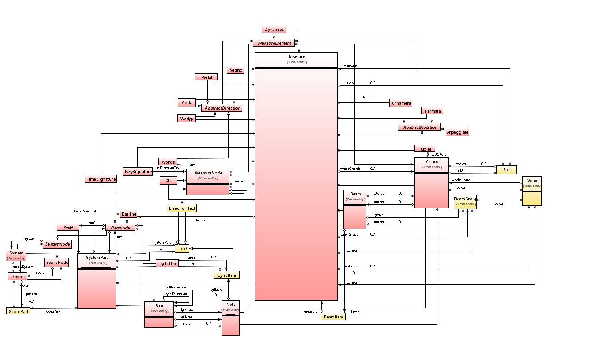

The score package, with its subpackages such as omr.score.entity, handles the logical music information inferred from recognized glyphs extracted from the physical sheet. The representation of such score can be stored on an external support using MusicXML format.
This is a (somewhat obsolete picture of the) hierarchy of classes : Score, Page, System, Slur, Stave, Measure, etc... 